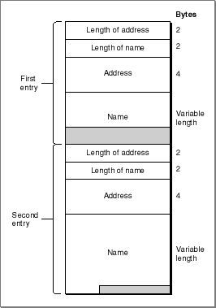

Using Mappers
This section begins by describing how the general provider functions that govern a provider's mode of operation apply to mapper providers. It goes on to discuss information you need to know in order to use mapper functions: how you format names and addresses specified in parameters to mapper functions and how you handle processing when calling mapper functions asynchronously. This section concludes with a discussion of different techniques you can use when using the mapper to search for a name pattern.Setting Modes of Operation for Mappers
Like all Open Transport providers, mappers can use different modes of operation. A mapper can execute synchronously or asynchronously. You set the mapper's default mode of execution by using the appropriate function to open it; for example, you can create a mapper that executes asynchronously by calling theOTAsyncOpenMapperfunction. After opening the mapper, you can change its mode of execution by calling theOTSetSynchronousorOTSetAsynchronousfunctions. To determine how mapper functions execute, you call theOTIsSynchronousfunction.Mappers use one asynchronous event and four completion events. Table 6-1 lists the event codes that the mapper provider can pass to your application and explains the meaning of the
cookieparameter to the notifier for each function. For more detailed information, see the descriptions of the mapper functions in "Functions".Table 6-1 Completion events for asynchronous mapper functions
The only way to cancel an asynchronous mapper function is to call the
OTCloseProviderfunction, passing the mapper reference for which the function was executed. TheOTCloseProviderfunction is described in the chapter "Providers" in this book.By default, mappers do not block and do not acknowledge sends. You can change a mapper's blocking status by using the
OTSetBlockingfunction. Mapper providers are not affected by their send-acknowledgment status. However, a mapper provider's blocking status might affect the behavior of mapper functions. For example, if a mapper is blocking, heavy network traffic might cause mapper functions to wait before sending or receiving data. If a mapper is nonblocking and you are doing a lot of name lookups, theOTLookupNamefunction might return with thekOTFlowErrresult. In this case, you can try executing the function later.Specifying Name and Address Information
Several mapper functions require that you specify a name or address. This might be a name to register or to look up. Specifying a name or address means that you have to create a buffer that contains the information and then create aTNetbufstructure that specifies the size and location of this buffer. The format that you use to store a name or an address is specific to the name-registration protocol that underlies the mapper and is exactly the same as the name and address formats that you can use to bind an endpoint. For information about name and address formats, please consult the documentation provided for the protocol you are using.If the protocol supports it, you can specify a name pattern rather than a name when calling the
OTLookupNamefunction. Different protocols might use different wildcard characters to define name patterns. Please consult the documentation provided for your protocol to determine valid wildcard characters and how you use these to specify name patterns.Searching for Names
You use theOTLookupNamefunction to search for a registered name or for a list of names if your protocol supports name pattern matching. You use thereqparameter to specify the name or name pattern to search for. When the function returns, it uses thereplyparameter to pass back the matching name or names.The
reqparameter is a pointer to aTLookupRequeststructure containing the name or name pattern to be found and additional information that the mapper can use in conducting the search. You use themaxcntfield to specify the number of names you expect to be returned. If you are looking for a specific name, set this field to 1. If you are looking for a name pattern, you can use this field to indicate the number of matches you expect theOTLookupNamefunction to return. You use thetimeoutfield to specify the amount of time (in milliseconds) available for this search. If a match is not found within the specified time, the function returns with thekOTNoDataErr. If the number you specify for themaxcntfield is larger than the number of names that match the given pattern, the mapper provider uses the value given in thetimeoutfield to determine when to stop the search.The
replyparameter is a pointer to aTLookupReplystructure that contains two fields. Thenamesfield describes the size and location of the buffer in which the replies are placed when the function returns; therspcountfield specifies the number of matching entries found. Figure 6-1 shows how the contents of a reply buffer containing two entries are stored. The section "Code Sample: Using OTLookupName" provides and describes a sample program that uses theOTLookupNamefunction. See especially, Listing 6-3.Figure 6-1 Format of entries in
OTLookupNamereply buffer
The first two bytes of each entry specify the length of the address; the second two bytes specify the length of the name. The address is stored next and then the name, padded to a four byte boundary.
Retrieving Entries in Asynchronous Mode
If you call theOTLookupNamefunction asynchronously, you can use an alternate method for retrieving matching entries. In asynchronous mode, this function sends two event codes: it sends theT_LKUPNAMERESULTcode each time it stores a name in the reply buffer, and it sends theT_LKUPNAMECOMPLETEcode when it has stored the last name in the reply buffer--that is, when the function as a whole completes execution. Each time theT_LKUPNAMERESULTevent is passed to your notification function, you can do the following:This method saves you the trouble of guessing how large a reply buffer to allocate. It might also save you some memory if you are expecting many matches to be returned and are interested in only some of them.
- Copy the name and address information from the reply buffer to some other location.
- From inside the notifier function, set the
reply->names.lenfield or thereply->rspcountfield to 0.When you set either of these fields to 0, Open Transport automatically sets the other field to 0. It's important, however, that you reset these values from within the notifier or the results might be unpredictable. You can also do it from code bracketed by the
OTEnterNotifierandOTLeaveNotifierfunctions. For more information, see "OTEnterNotifier".- Repeat the first two steps until the event passed to your notifier function is
T_LKUPNAMECOMPLETE.
- Note
- The
T_LKUPNAMECOMPLETEevent might have stored a name in the buffer. Be sure to check for this possibility.Code Sample: Using OTLookupName
This section discusses the program OTLookupNameTest, which demonstrates how you open an NBP mapper provider, issue an NBP lookup request, and print out the resulting information. Listing 6-1 shows the preprocessor directives and the main function of the program.Listing 6-1 The main function to OTLookupNameTest
#ifndef qDebug /* variable set for OT debugging macros */ #define qDebug1 #endif #include <OpenTransport.h> #include <OpenTptAppleTalk.h> #include <OTDebug.h> /* Need OTDebugBreak & OTAssert macros */ #include <stdio.h> /* OTDebugStr is not defined in OT header files, but it is exported by the libraries, so we define the prototype here. */ extern pascal void OTDebugStr(const char* str); static UInt32 gLastPrinted = 0; /* Global var to track printing */ void main(void) { OSStatus err; char requestAddress[] = "=:AFPServer@*"; printf("Hello World!\n"); err = InitOpenTransport(); if (err == noErr) { err = LookupAndPrint(requestAddress); CloseOpenTransport(); } if (err == noErr) { printf("Success.\n"); } else { printf("Failed with error %d.\n", err); } printf("Done. Press command-Q to Quit.\n"); }The main function initializes Open Transport, calls the user-defined functionLookupAndPrint(passing a value for the requested address), and then closes Open Transport.The
LookupAndPrintfunction is the key function to the OTLookupNameTest program. However, because it calls Open Transport functions synchronously, it also uses a notifier to yield time to other processes. Listing 6-2 shows the notifier, which callsprintfperiodically in response to akOTSyncIdleevent. (Theprintffunction callsWaitNextEvent, thus our synchronous calls to Open Transport will yield time to other processes. A real world application would probably use threads to do this.Listing 6-2 Notifier that yields time to other processes
static pascal void YieldingNotifier(EndpointRef ep, OTEventCode code, OTResult result, void* cookie) { #pragma unused(ep) #pragma unused(result) #pragma unused(cookie) switch (code) { case kOTSyncIdleEvent: if (TickCount() > gLastPrinted + 10) { printf("."); fflush(stdout); gLastPrinted = TickCount(); } break; default: /* do nothing */ break; } }For more information on using threads to yield time, see "Using Synchronous Processing With Threads".Listing 6-3 shows the
LookupAndPrintfunction. This function takes one parameter, a pointer to an NBP address. This address must have the form<name>:<type>@<zone>
The function begins by opening an NBP mapper provider and switching it into synchronous/blocking mode. It uses
kOTSyncIdleevents (and the notifier shown in Listing 6-2) to yield time to other processes. Then it issues an NBP lookup request, using theOTLookUpNamefunction . When the request completes, the function calls the user-definedPrintAddressandPrintNamefunctions to display the results.Listing 6-3 The LookupAndPrint function
static OSStatus LookupAndPrint(char *requestAddress) { OSStatus err; OSStatus junk; MapperRef nbpMapper; TLookupRequest lookupRequest; TLookupReply lookupReply; UInt8 *responseBuffer; TLookupBuffer*currentLookupReplyBuffer; UInt32 nameIndex; err = noErr; nbpMapper = kOTInvalidMapperRef; /* for error checking */ /* Create the responseBuffer. */ responseBuffer = OTAllocMem(kResponseBufferSize); if (responseBuffer == nil) err = kENOMEMErr; /* Create an NBP mapper and set it to up for threaded processing. */ if (err == noErr) nbpMapper = OTOpenMapper(OTCreateConfiguration(kNBPName), 0, &err); if (err == noErr) { junk = OTSetSynchronous(nbpMapper); OTAssert("LookupAndPrint: Could not set synchronous mode on mapper", junk == noErr); junk = OTSetBlocking(nbpMapper); OTAssert("LookupAndPrint: Could not set blocking mode on mapper", junk == noErr); junk = OTUseSyncIdleEvents(nbpMapper, true); OTAssert("LookupAndPrint: Could not enable sync idle events on mapper", junk == noErr); junk = OTInstallNotifier(nbpMapper, YieldingNotifier, nil); OTAssert("LookupAndPrint: Could not install notifier for mapper", junk == noErr); } /* Call OTLookupName synchronously. */ if (err == noErr) { /* Set up the TLookupRequest structure. */ OTMemzero(&lookupRequest, sizeof(lookupRequest)); lookupRequest.name.buf = (UInt8 *) requestAddress; lookupRequest.name.len = OTStrLength(requestAddress); lookupRequest.timeout = 1000;// 1 second in milliseconds lookupRequest.maxcnt = kResponseBufferSize / kNBPEntityBufferSize; /* Set up the TLookupReply structure. */ OTMemzero(&lookupReply, sizeof(lookupReply)); lookupReply.names.buf = responseBuffer; lookupReply.names.maxlen = kResponseBufferSize; /* Now do the lookup. */ err = OTLookupName(nbpMapper, &lookupRequest, &lookupReply); } /* Print out the contents of the responseBuffer. */ if (err == noErr) { printf("\n"); /* Start by pointing to the beginning of the response buffer. */ currentLookupReplyBuffer = (TLookupBuffer *) responseBuffer; /* For each response in the buffer... */ for (nameIndex = 0; nameIndex < lookupReply.rspcount; nameIndex++) { /*... print the name and address and... */ printf("%3d ", nameIndex); PrintAddress( (DDPAddress *) ¤tLookupReplyBuffer->fAddressBuffer[0]); PrintName( (char *)¤tLookupReplyBuffer-> fAddressBuffer[currentLookupReplyBuffer-> fAddressLength], currentLookupReplyBuffer->fNameLength); printf("\n"); /*... use OTNextLookupBuffer to get from the current buffer to the next. */ currentLookupReplyBuffer = OTNextLookupBuffer(currentLookupReplyBuffer); } } /* Clean up. */ if (responseBuffer != nil) { OTFreeMem(responseBuffer); } if (nbpMapper != kOTInvalidMapperRef) { junk = OTCloseProvider(nbpMapper); OTAssert("LookupAndPrint: Failed closing mapper", junk == noErr); } return err; }The functionLookupAndPrintcalls two functions, PrintName and PrintAddress, to print names and addresses; Listing 6-4 shows the two functions.Listing 6-4 Printing names and addresses
static void PrintName(const char *name, UInt32 length) { char nameForPrinting[256]; OTMemzero(nameForPrinting, 256); OTMemcpy(nameForPrinting, name, length); printf(""%s"", nameForPrinting); } static void PrintAddress( DDPAddress *addr ) { OTAssert( "PrintAddress: Expected a DDPNBPADdress", addr->fAddressType == AF_ATALK_DDP ); printf("Net = $%04x, Node = $%02x, Socket = $%02x ", addr->fNetwork, addr->fNodeID, addr->fSocket); }
Subtopics
- Setting Modes of Operation for Mappers
- Specifying Name and Address Information
- Searching for Names
- Retrieving Entries in Asynchronous Mode
- Code Sample: Using OTLookupName